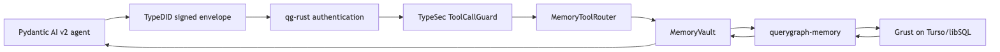

typesec-memory —
MarcianaAn agent’s durable memory is not merely a retrieval feature. It
accumulates the most sensitive material the agent has encountered,
carries assertions across sessions, and can turn one successful prompt
injection into a standing source of future instructions. A
user_id predicate on a vector query is useful scoping, but
it does not answer the governing questions: which verified agent may
remember, recall, transform, share, or forget this record; for which
purpose; at which clearance; and with what evidence afterward?
Lido applies the existing Typesec model to that problem. The
subsystem is named Marciana, after Venice’s Biblioteca
Marciana: a library understood not as a pile of text, but as an
institution for provenance, custody, classification, access, and
stewardship. Its security core lives in the typesec-memory
crate. The realized v1 adapter lives in Grust and the authenticated edge
in qg-rust. The accepted extraction moves the memory-specific adapter
and reusable service assembly into standalone Marciana; qg-rust and
qg-python remain consumers. That division keeps authority, persistence,
product composition, transport, and framework integration in their
proper homes.
Every memory space implements the ordinary Typesec
Resource contract:
memory/user:alice/profile
memory/agent:planner/procedural
memory/team:research/sharedThe existing RBAC, graph, and ODRL engines can therefore govern memory without a parallel policy language. Each operation requires a different typed proof:
Capability<CanRead, MemorySpace>
Capability<CanWrite, MemorySpace>
Capability<CanDelete, MemorySpace>The proofs are not interchangeable. Write authority does not imply delete authority, and a capability for one space fails against another. They retain the same lease, revocation, attenuation, and audit behavior as every other Typesec capability. A planner can delegate a short-lived read capability to a sub-agent without handing it write or forget authority.
The vault makes that distinction part of its API rather than an instruction in a system prompt:
let write: Capability<CanWrite, MemorySpace> =
mint_capability_for_id(&engine, subject, space.resource_id(), &options)?;
let id = vault.remember(
&space,
&write,
MemoryDraft::new(
MemoryKind::Profile,
MemoryContent::text("prefers dark mode"),
Provenance::Operator,
),
)?;MemoryVault checks that the capability is active and
bound to the target space. When constructed with
with_policy, it also rechecks policy at use time, so a
still-live proof does not silently ignore a purpose or governance
change. The model never receives a constructor for capabilities or an
unguarded handle to stored content.
Scope answers whose memory this is. A label answers how sensitive its
contents are. Every stored record carries a runtime Public,
Internal, Sensitive, or Secret
tag. Only the vault may rehydrate the private content field, and the
typed Rust recall path declares the maximum sensitivity of the
destination context:
let recalled: Recall<Internal> = vault.recall::<Internal>(
&space,
&read,
RecallQuery::text("display preference"),
&RequestContext::default().with_purpose("support"),
)?;Records at or below Internal arrive as typed hits.
Hotter records arrive only as RedactedHit metadata.
CanReadSensitive can reveal through the guarded escalation
path up to Sensitive; Secret remains
sealed because v1 does not model a stronger reveal authority.
At JSON and tool-call boundaries, where a runtime string cannot become a
Rust type parameter, recall_at applies the same ceiling
check dynamically.
Purpose is a separate gate. A record limited to support
is absent from an analytics recall even when the caller
otherwise holds read authority. An expiry becomes enforceable retention
state: reap_expired requires delete authority, tombstones
the records, and emits the same audit trail as an explicit forget. With
the receipts feature, deletion can also produce signed evidence for
workflows that require offline verification.
Consolidation preserves information-flow labels. Replacing several
facts with a summary joins their labels, so a summary of
Sensitive material is itself at least
Sensitive; transformation cannot launder it into a cooler
context. The entire supersede-and-replace plan is submitted through
MemoryStore::apply_batch as one unit, which transactional
adapters can commit atomically.
Marciana records where a fact came from. A verified TypeDID envelope, a human operator, a guarded tool result, a conversation, and raw model text do not begin with the same trust. Raw model text is born quarantined, and ordinary recall, neighborhood recall, semantic recall, and consolidation exclude quarantined records by default. This is the defense against memory poisoning: an injected sentence may be retained for inspection without silently becoming durable truth that guides a later session.
That guarantee has an important v1 edge. The Rust query model can
explicitly request quarantined records, but Marciana does not yet expose
a mandatory promotion operation that requires
CanDeclassify, nor does every consolidation path require
proof of promotion before quarantine can be cleared. Hosted use must add
that audited promotion boundary and prove quarantine propagation across
all derived records. The book treats this as unfinished security work,
not as a property inferred from the default query behavior.
A memory record distinguishes when it was observed from when it was valid. Supersession invalidates an old assertion instead of overwriting history, so “Alice lives in Venice” can remain inspectable as a past belief beside its successor without being returned as current truth. Explicit forgetting is the separate destructive path.
The in-tree InMemoryStore makes the contract easy to
test and embed. The feature-gated GrustMemoryStore adds
entity relationships and neighborhood recall. The v1
querygraph-memory adapter, currently located in Grust and
used as the behavior-preserving Marciana extraction source, carries the
same MemoryStore contract to persistent Turso/libSQL-backed
Grust universal tables. In every case, the graph or semantic index
returns candidate record identifiers; the vault decides whether content
can be revealed. Retrieval can narrow and rank a candidate set, but it
cannot widen authority.
The SemanticIndex seam follows the same rule. Typesec
ships a deterministic KeywordIndex, while QueryGraph v1
proves an in-process VectorIndex with a privacy-aware
embedder. The index is not the source of truth and does not return
content. Remembering feeds it on a best-effort basis, forgetting prunes
it, and recall always returns through the vault’s space, validity,
quarantine, and label checks.
Reference cognition is similarly constrained. Extractors and
analytics produce MemoryDrafts and
ConsolidationPlans; they do not mutate the store directly.
The deterministic RuleExtractor and local-model
OllamaExtractor demonstrate that raw model output remains
an untrusted proposal until authorized code sends it through
remember or consolidate. The v1 adapter’s
reference analytics are also plan producers only.
Distributed cognition must preserve that inert proposal boundary:
MemoryVault::apply_cognition freshly authorizes and
validates the proposal before handing an opaque prepared commit to the
trusted store transaction. If the transaction committed but its reply
was lost, recover_cognition_outcome accepts only the exact
job and proposal digest, checks a current CanWrite
capability and policy before lookup, and discloses validated historical
evidence without reconstructing a proposal, rerunning mutation
authority, or applying a second write. Lookup absence, conflicts,
corruption, and adapter failures deliberately share one unavailable
result.
That boundary is deliberately narrow and bounded. Network and
model-produced JSON enters through
CognitionProposal::from_json_slice, which rejects an
oversized body before parsing; proposal and nested cognition types
reject unknown fields. Application independently resolves the exact job,
native algorithm and version, governed scan, immutable snapshot,
effective projection, source manifest, verified TypeDID request,
subject, and purpose. Its durable idempotency identity contains only the
space, job, and an opaque digest of the authority scope. Fixed budgets
cover proposal bytes, source records and source IDs, projections,
mutations, cloned lineage, evidence, and affected IDs. An
Applied backend outcome must carry the exact audit the
vault just prepared. An AlreadyApplied outcome instead
discloses an immutable historical commit: its canonical shape,
authority-scoped identity, proposal, binding, source, TypeDID,
governed-scan, authorization, evidence, and affected IDs must match,
while historical preparation time and policy-decision evidence remain
those committed by the original transaction. Signed commit receipts
apply the same canonical and bounded treatment to the evidence they
expose. These are TypeSec security rules; they do not introduce a Cognee
runtime, store, adapter, or wire-compatibility surface.
Strict cognition decoding is also a schema boundary, not an invitation to discard data. Recursive unknown-field rejection reaches shared nested domain types such as memory drafts, content, entities, and provenance, which may also appear in stored or cross-service documents. Before deploying the stricter decoder over older data, inventory and validate those documents, transform any extra fields through an explicit versioned migration, and only then advance readers and writers together. Future intentional fields require a schema version and migration; they must not depend on an older reader silently ignoring them.
Marciana memory operations are normal protected tools:
memory.remember -> write -> resource from the space argument
memory.recall -> read -> resource from the space argument
memory.forget -> delete -> resource from the space argumentmemory_bindings() registers those mappings with the same
deny-by-default ToolCallGuard used for OpenAI, Anthropic,
LangChain, Pydantic AI, and MCP. MemoryToolRouter validates
the normalized request again, mints the operation-specific capability
through the configured policy engine, and only then calls the vault. The
CLI exposes the path through typesec memory-serve; Python
has MemoryGate; and typesec-wasm provides
WasmMemoryVault for the in-memory web boundary.
The realized QueryGraph service preserves the same sequence across a network:

qg-python keeps the Ed25519 signing seed in typed runtime
dependencies. qg-rust accepts the verified signing DID—not a
caller-supplied JSON subject—as the policy principal. The signature
binds sender, recipient, action, exact route, and body digest.
Authentication failures return 401; an authenticated
subject denied by TypeSec receives a 403 receipt.
The executable proof remembers a governed result as one authorized specialist, terminates and restarts qg-rust, recalls the durable record as a differently credentialed supervisor, and denies a validly signed outsider. This is a real restart-persistence and identity-bound authorization proof, not a claim that the service is already a hosted multi-tenant product.
Marciana v1 is complete at the durable local-service boundary. It includes the vault, runtime labels, clearance-typed recall, redaction and guarded reveal, purpose filtering, retention, tombstones and receipts, provenance quarantine, bi-temporal supersession, guarded agent tools, Python and WASM surfaces, Grust reference storage, a versioned backend conformance corpus, transactional consolidation, reference extraction, semantic-index hooks, persistent Turso, identity-bound qg-rust routes, and the Pydantic AI demonstration.
The following limits are equally part of the contract:
MemoryId::next() is monotonic only within one process.
A restarted process that writes into an existing durable store can
collide with an older id until the durable-id contract is upgraded.VectorIndex is in-process and
nonpersistent. Persistent, tenant-scoped LanceDB ANN is future work; ANN
remains a ranking aid rather than an authorization mechanism.querygraph-memory RELATES
representation identifies an edge by its structural
(from, label, to) shape. It cannot preserve two assertions
that differ only by fact_id; explicit assertion identity
and fuller lineage are post-v1 schema work.CanDeclassify promotion and quarantine propagation through
every derived record are not complete.CanReadSensitive reveals through
Sensitive; Secret remains sealed.These limits are not reasons to weaken the v1 claim. They make the claim reviewable: Lido delivers governed, persistent agent memory with a tested end-to-end proof, while durable identifiers, replica-safe replay, persistent ANN, assertion-level lineage, distributed cognition, and hosted operations remain named work with explicit acceptance gates.